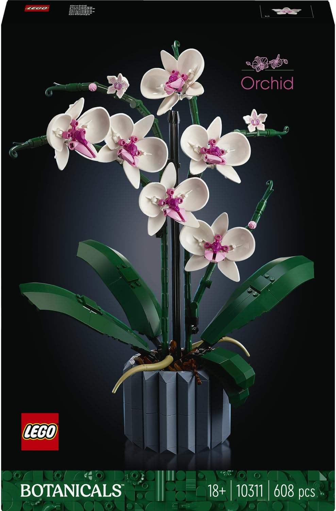
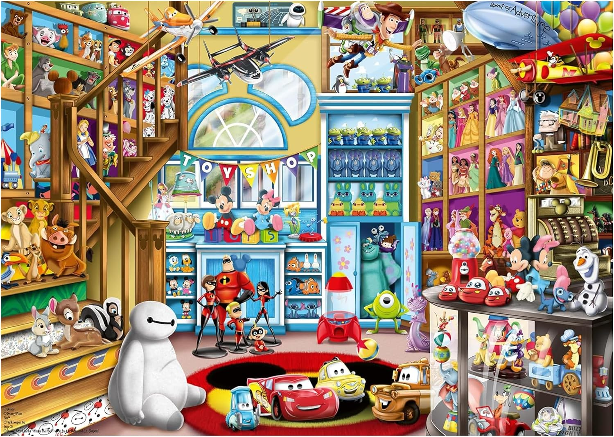

Por el equipo de Casa y Comparativa · Precios y plazos del 15 de noviembre de 2026, hacia la 1:25 (hora de Madrid)
Imagen ilustrativa de ambiente navideño.
Estas categorías son solo una guía. Un puzzle, un set de flores o un altavoz pueden gustar a cualquiera: no hace falta encajar en un estereotipo para que el regalo tenga sentido.
Hemos podido verificar dos productos nuevos en stock en Amazon.es, como artículo nuevo, de 13,49 € a 44,99 €: un set de orquídeas LEGO para adultos y un puzzle Ravensburger de 1.000 piezas, a partir de 14 años. Los enlazamos con ideas ya publicadas —útiles, originales y económicas— para que esta guía no se quede solo en lo friki.
Aviso: En calidad de Afiliado de Amazon, obtenemos ingresos por las compras adscritas que cumplen los requisitos aplicables. Los enlaces a otras tiendas no son de afiliado. Los precios y los plazos de entrega los consultamos el 15 de noviembre de 2026, hacia la 1:25 (hora de Madrid). El precio final y la fecha de entrega son los que marque cada tienda al comprar.
Comprueba la fecha de entrega antes de comprar; algunos envíos tardan más en Navidad.
Original
Un set de orquídeas LEGO, presentado por la ficha como maqueta para adultos. No es un juguete para peques.

De 20 a 50 €OriginalPara adultos
LEGO Botanicals Orquídeas 10311, maqueta para adultos
Un set de 608 piezas para construir orquídeas artificiales blancas y rosas, con un jarrón azul estriado y piezas marrones que simulan la tierra, según la ficha. Declara 6 flores grandes, 2 recién abiertas, 5 hojas en la base y 2 raíces aéreas, y permite girar tallos, flores, raíces y hojas. La ficha lo presenta como un kit de maquetas para adultos. En la tabla, sin embargo, aparece una edad mínima de 9 meses, un dato que no encaja con un set de 608 piezas y que no tomamos como referencia. La información de seguridad dice: «Advertencia. Riesgo de asfixia. Partes pequeñas y bolas pequeñas. No apto para niños menores de 3 años». Lo vende y envía Amazon. Entrega anunciada el miércoles 18 de noviembre. Valoraciones: 4,8 sobre 5, a partir de 18.781 opiniones.
44,99 €Amazon.es · vendido y enviado por Amazon · entrega anunciada el miércoles 18 de noviembre · en stock
Set 10311, 608 piezas, presentado como maqueta para adultos. Advertencia de asfixia por piezas pequeñas: no apto para menores de 3 años. La edad de 9 meses de la tabla no la damos por buena.
Un puzzle de 1.000 piezas, a partir de 14 años según la ficha, y las ideas de hasta 20 € ya publicadas.

Hasta 20 €EconómicoA partir de 14 años
Ravensburger, puzzle 1.000 piezas La tienda de juguetes, a partir de 14 años
Un puzzle de 1.000 piezas, de 70 × 50 cm una vez montado, con personajes de Disney, según la ficha. La edad recomendada es de 14 años en adelante (la ficha habla de puzles para adultos y niños +14 años). La tabla indica una edad mínima de 108 meses, que son 9 años: no coincide con el texto de «+14 años», así que nos quedamos con la edad escrita en el listado y lo dejamos apuntado. En información de seguridad aparece: «Warning according to Toy Regulation not necessary». El listado menciona cartón reciclado. Lo vende y envía Amazon. La ficha anuncia entrega el jueves 19 de noviembre, con envío gratis en el primer pedido; conviene comprobar el coste de envío al comprar. Valoraciones: 4,8 sobre 5, a partir de 2.415 opiniones.
13,49 €Amazon.es · vendido y enviado por Amazon · entrega anunciada el jueves 19 de noviembre (envío gratis en el primer pedido, según la ficha) · en stock
1.000 piezas, 70 × 50 cm, a partir de 14 años según el listado. La tabla indica 108 meses (9 años): no casan, y priorizamos el texto de +14. Advertencia de juguete: no necesaria, según la ficha.